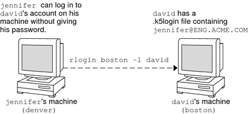

System Administration Guide: Security Services
|
|||
|
1. Security Services (Overview) Part II System, File, and Device Security 2. Managing Machine Security (Overview) 3. Controlling Access to Systems (Tasks) 4. Virus Scanning Service (Tasks) 5. Controlling Access to Devices (Tasks) 6. Using the Basic Audit Reporting Tool (Tasks) 7. Controlling Access to Files (Tasks) Part III Roles, Rights Profiles, and Privileges 8. Using Roles and Privileges (Overview) 9. Using Role-Based Access Control (Tasks) 10. Role-Based Access Control (Reference) Part IV Solaris Cryptographic Services 13. Solaris Cryptographic Framework (Overview) 14. Solaris Cryptographic Framework (Tasks) 15. Solaris Key Management Framework Part V Authentication Services and Secure Communication 16. Using Authentication Services (Tasks) 19. Using Solaris Secure Shell (Tasks) 20. Solaris Secure Shell (Reference) 21. Introduction to the Kerberos Service 22. Planning for the Kerberos Service 23. Configuring the Kerberos Service (Tasks) 24. Kerberos Error Messages and Troubleshooting 25. Administering Kerberos Principals and Policies (Tasks) 26. Using Kerberos Applications (Tasks) 27. The Kerberos Service (Reference) 28. Solaris Auditing (Overview) 29. Planning for Solaris Auditing 30. Managing Solaris Auditing (Tasks) |
Kerberos Password ManagementWith the Kerberos service configured, you now have two passwords: your regular Solaris password and a Kerberos password. You can make both passwords the same, or they can be different. Advice on Choosing a PasswordYour password can include almost any character that you can type. The main exceptions are the Control keys and the Return key. A good password is a password that you can remember readily, but no one else can easily guess. Examples of bad passwords include the following:
A good password is at least eight characters long. Moreover, a password should include a mix of characters, such as uppercase and lowercase letters, numbers, and punctuation marks. Examples of passwords that would be good if they didn't appear in this manual include the following:
Caution - Don't use these examples. Passwords that appear in manuals are the first passwords that an intruder will try. Changing Your PasswordIf PAM is properly configured, you can change your Kerberos password in two ways:
After you change your password, it takes some time for the change to propagate through a system (especially over a large network). Depending on how your system is set up, this delay might take anywhere from a few minutes to an hour or more. If you need to get new Kerberos tickets shortly after you change your password, try the new password first. If the new password doesn't work, try again using the old password. Kerberos V5 protocol enables system administrators to set criteria about allowable passwords for each user. Such criteria is defined by the policy set for each user (or by a default policy). See Administering Kerberos Policies for more on policies. For example, suppose that user jennifer's policy (call it jenpol) mandates that passwords be at least eight letters long and include a mix of at least two types of characters. kpasswd will therefore reject an attempt to use “sloth” as a password. % kpasswd kpasswd: Changing password for jennifer@ENG.EXAMPLE.COM. Old password: <Jennifer types her existing password> kpasswd: jennifer@ENG.EXAMPLE.COM's password is controlled by the policy jenpol which requires a minimum of 8 characters from at least 2 classes (the five classes are lowercase, uppercase, numbers, punctuation, and all other characters). New password: <Jennifer types 'sloth'> New password (again): <Jennifer re-types 'sloth'> kpasswd: New password is too short. Please choose a password which is at least 4 characters long. Here, jennifer uses “slothrop49” as a password. “slothrop49” meets the criteria, because it is over eight letters long and contains two different types of characters (numbers and lowercase letters). % kpasswd kpasswd: Changing password for jennifer@ENG.EXAMPLE.COM. Old password: <Jennifer types her existing password> kpasswd: jennifer@ENG.EXAMPLE.COM's password is controlled by the policy jenpol which requires a minimum of 8 characters from at least 2 classes (the five classes are lowercase, uppercase, numbers, punctuation, and all other characters). New password: <Jennifer types 'slothrop49'> New password (again): <Jennifer re-types 'slothrop49'> Kerberos password changed. Example 26-3 Changing Your PasswordIn the following example, user david changes both his UNIX password and Kerberos password with passwd. % passwd
passwd: Changing password for david
Enter login (NIS+) password: <Type the current UNIX password>
New password: <Type the new UNIX password>
Re-enter password: <Confirm the new UNIX password>
Old KRB5 password: <Type the current Kerberos password>
New KRB5 password: <Type the new Kerberos password>
Re-enter new KRB5 password: <Confirm the new Kerberos password>Note that passwd asks for both the UNIX password and the Kerberos password. This behavior is established by the default configuration. In that case, user david must use kpasswd to set his Kerberos password to something else, as shown next. This example shows user david changing only his Kerberos password with kpasswd. % kpasswd kpasswd: Changing password for david@ENG.EXAMPLE.COM. Old password: <Type the current Kerberos password> New password: <Type the new Kerberos password> New password (again): <Confirm the new Kerberos password> Kerberos password changed. In this example, user david changes the password for the Kerberos principal david/admin (which is not a valid UNIX user). He must use kpasswd. % kpasswd david/admin kpasswd: Changing password for david/admin. Old password: <Type the current Kerberos password> New password: <Type the new Kerberos password> New password (again): <Type the new Kerberos password> Kerberos password changed. Granting Access to Your AccountIf you need to give someone access to log in to your account (as you), you can do so through Kerberos, without revealing your password, by putting a .k5login file in your home directory. A .k5login file is a list of one or more Kerberos principals corresponding to each person for whom you want to grant access. Each principal must be on a separate line. Suppose that the user david keeps a .k5login file in his home directory that looks like the following: jennifer@ENG.EXAMPLE.COM joe@EXAMPLE.ORG This file allows the users jennifer and joe to assume david's identity, provided that they already have Kerberos tickets in their respective realms. For example, jennifer can remotely log in to david's machine (boston), as him, without having to give his password. Figure 26-1 Using the .k5login File to Grant Access to Your AccountIn the case where david's home directory is NFS-mounted, using Kerberos V5 protocols, from another (third) machine, jennifer must have a forwardable ticket in order to access his home directory. See Creating a Kerberos Ticket for an example of using a forwardable ticket. If you will be logging in to other machines across a network, you'll want to include your own Kerberos principal in .k5login files on those machines. Using a .k5login file is much safer than giving out your password for these reasons:
One common way to use the .k5login file is to put it in root's home directory, giving root access for that machine to the Kerberos principals listed. This configuration allows system administrators to become root locally, or to log in remotely as root, without having to give out the root password, and without requiring anyone to type the root password over the network. Example 26-4 Using the .k5login File to Grant Access to Your AccountSuppose jennifer decides to log in to the machine boston.example.com as root. Because she has an entry for her principal name in the .k5login file in root's home directory on boston.example.com, she again does not have to type in her password. % rlogin boston.example.com -l root -x This rlogin session is using DES encryption for all data transmissions. Last login: Thu Jun 20 16:20:50 from daffodil SunOS Release 5.7 (GENERIC) #2: Tue Nov 14 18:09:31 EST 1998 boston[root]% |
||
|